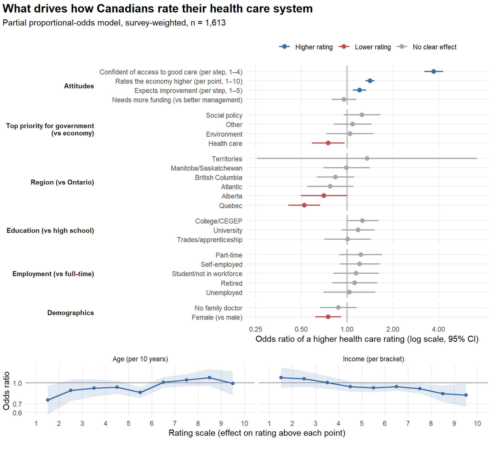
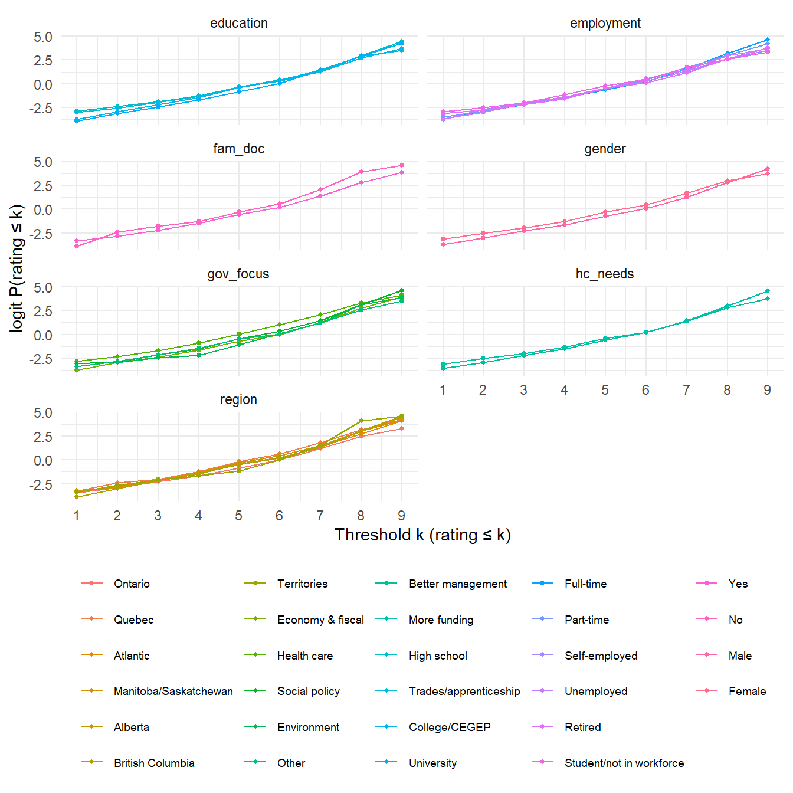
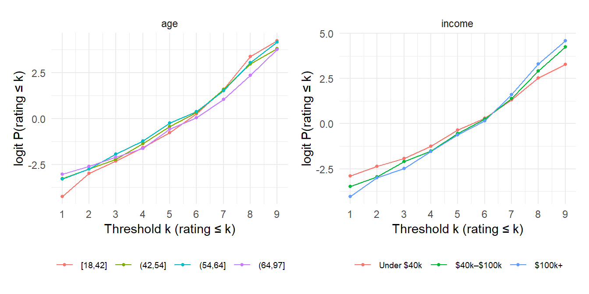
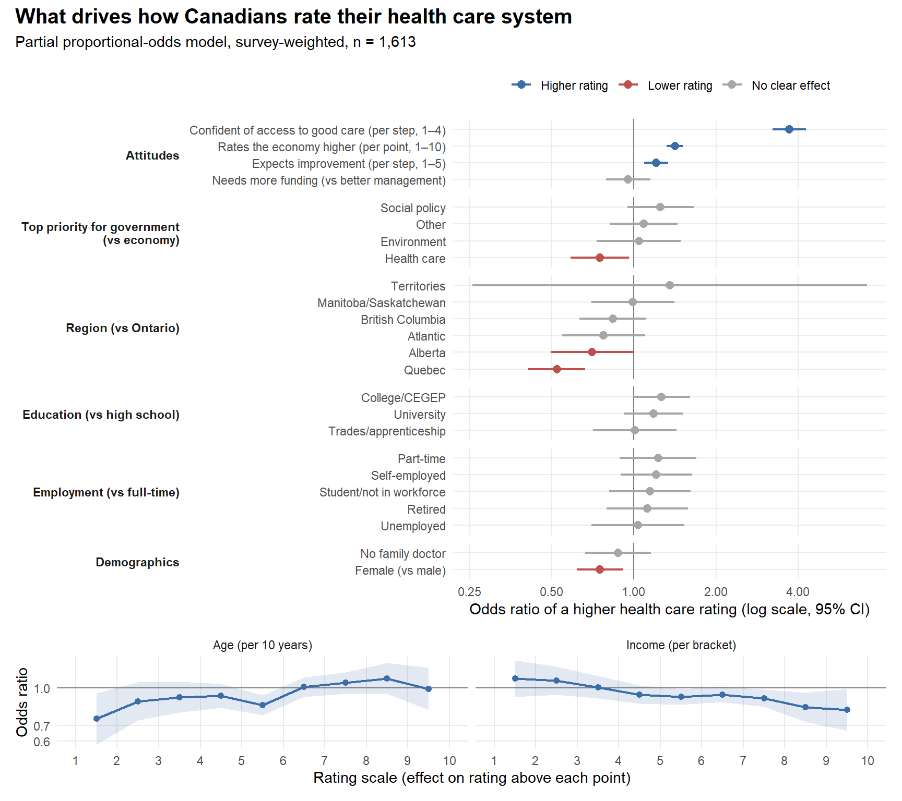

Code
library(tidyverse)
library(gtsummary)
library(ordinal)
library(car)
library(patchwork)
# Import Data
raw <- read_csv("Canada_Healthcare_Survey_Cleaned.csv", show_col_types = FALSE) |>
select(-1) # drop the pandas index columnData cleaning, assumption checks and an ordinal regression model

This analysis aimed to investigate, which factor(s) best predict how someone may feel about the current Canadian healthcare system? To answer this, data was pulled from Open Canada https://open.canada.ca/data/en/dataset/3eac6c30-4e06-4441-a84b-8019786ae69c . Variables such as employment status, income, current rating of the economy, education level, region etc (see above) were used as predictors in a partial proportional-odds model. Key findings are below:
Best predictor of positive attitudes towards healthcare was access to healthcare itself. Feeling confident of getting good care was by far the strongest predictor: each step up the 4-point agreement scale multiplies the odds of a higher rating by 3.71. Rating the economy well comes second (1.41 per point), which suggests a general optimism about public institutions. Expecting the system to improve adds a smaller effect (1.20 per step).
In terms of demographics, the location was the most important predictor variable. Quebecers have about half the odds of a higher rating than Ontarians (OR 0.52), and Albertans are also lower (OR 0.70), even after accounting for their attitudes.
Women rate the system lower than men (OR 0.75), and so do people whose top priority for government is health care itself (OR 0.75). Those who want to prioritize it more than the economy are more likely to have more negative impressions of our healthcare system.
Age and income affect how extreme a rating is: older Canadians are more likely to give the very lowest rating (OR 0.75 per decade for rating above 1). At the top of the scale, the effect flips direction (OR 1.10 for rating above 8), though that estimate is uncertain. Income works the other way, higher-income respondents are less likely to give the top ratings.
Education, employment, having a family doctor and views on funding vs management show no clear effect once everything else is accounted for.
The question is which characteristics and attitudes best explain how Canadians rate their health care system (rated 1 = terrible to 10 = excellent). Data was aquired from Open Canada dataset https://open.canada.ca/data/en/dataset/3eac6c30-4e06-4441-a84b-8019786ae69c
The outcome is ordinal: the ratings have a clear order, but the distance between a 3 and a 4 need not equal the distance between an 8 and a 9. The model is therefore an partial proportional odds model, weighted with the survey weights so the results represent Canadians rather than just the people who answered.
| Step | Section | What happens |
|---|---|---|
| 1 | Data preparation | Recode variables into model-ready types and collapse sparse categories |
| 2 | Assumption checks | Make sure the ordinal model is appropriate for this data |
| 3 | Model and results | Fit the model, rank the predictors and visualise their effects |
Much of the cleaning and pre-processing was done in Python with reference to the data dictionary to sort out variable types and encoding (when applicable).
=====================
# import libraries
import pandas as pd
import numpy as np
import matplotlib.pyplot as plt # load in raw data
df = pd.read_csv("cdn-attitudes-healthcare_attitudes-canadiens-system-soins.csv")Lots of features in this dataset, need to pare down response variable and explanatory variables - Response variable: Q3 - How would you rate the current state of the Canadian health care system? (1-10, 10 good, 1 bad, 99 - refused to answer)
explanatory_variables = ['Q1_CODM1', 'Q2', 'Q4', 'Q5', 'Q6A_M1', 'Q7', 'AGE', 'Q12','Q13','Q14','Q15',
'Q16', 'SREGCODE', 'REGGRP', 'Q3', 'WTS']
column_names = ['Gov_focus','Current_state_eco','Access_good_hc','Can_hc_improve','Most_challenge_hc','Hc_manage',
'Education', 'Household_income', 'Employment_status', 'Have_fam_doc','Gender','Province', 'Area', 'Weight']# subset using intersection and list of explanatory variables
df_cols = df.columns.intersection(explanatory_variables)df_subset = df[df_cols]df_subset = df_subset.rename(columns={'Q1_CODM1': 'Gov_focus',
'Q2': 'Current_state_eco',
'Q4': 'Access_good_hc',
'Q5': 'Can_hc_improve',
'Q6A_M1': 'Most_challenge_hc',
'Q7': 'Hc_manage',
'Q12': 'Education',
'Q13': 'Household_income',
'Q14': 'Employment_status',
'Q15': 'Have_fam_doc',
'Q16': 'Gender',
'SREGCODE': 'Province',
'REGGRP': 'Area',
'WTS': 'Weight',
'Q3': 'Label'}, inplace=False)# Clean dataset
# Remove entries with 99 for Gov_focus, and Current_state_eco
# Remove entries with 5 and 9 for Access_good_hc and Can_hc_improve
# Remove 9 from Most_challenge_hc
# Remove 5 from Hc_manage
# Remove most missing data from Eduction and 9
# Remove 8 from HC income
# Remove 9 from Employment_status
# Remove 3 from Have_fam_doc
# does it make sense to remove all these values? They're still meaningful even if they refused to answer
# they represent a valid response
# Visualize the count of each answer for each column # Show cumulative number of each unique response per variable
for cols in df_subset.columns:
print(f"Value counts for {cols}:")
print(df_subset[cols].value_counts(dropna=False))
print("\n")Value counts for Gov_focus:
Gov_focus
Economy 552
Health care system 463
Jobs/Unemployment 265
Dk/Ref 234
Environment 131
Cost of living/High taxes 99
Education 91
Debt reduction/Debt/Deficit 88
Poverty 83
Other 48
Helping elderly people/Seniors 47
Laws/Justice system 45
Immigration 44
Canada/Canadian citizens 41
Social problems/Social programs/Social services 36
Federal/Provincial relations/Place of QC in Canada 32
Government spending 30
Foreign issues 25
Crime 22
Affordable housing 16
Aboriginal issues 16
Pension issues 16
Oil issues 14
Infrastructure/Roads 13
Child care 12
Family Virtues 10
National security/Military/Troops 9
Gun Controls/Registration 9
Welfare 7
Agriculture 5
Name: count, dtype: int64
Value counts for Current_state_eco:
Current_state_eco
7 700
6 568
5 483
8 296
4 180
3 89
Don't know/Refuse 51
1 - Terrible 48
9 38
2 29
10 - Excellent 21
Name: count, dtype: int64
Value counts for Label:
Label
7 549
5 474
6 419
8 358
4 217
3 125
1 - Terrible 106
9 91
2 73
10 - Excellent 63
Don't know/Refuse 28
Name: count, dtype: int64
Value counts for Access_good_hc:
Access_good_hc
Somewhat agree 1284
Strongly agree 655
Somewhat disagree 366
Strongly disagree 175
Don't know/Refuse 23
Name: count, dtype: int64
Value counts for Can_hc_improve:
Can_hc_improve
Stay the same 869
Worsen somewhat 663
Improve somewhat 585
Significantly worsen 197
Significantly improve 104
Don't know/Refuse 85
Name: count, dtype: int64
Value counts for Most_challenge_hc:
Most_challenge_hc
#NULL! 1251
Shortage of medical professionals such as doctors, nurses an 466
The aging of the Canadian population 357
The rising cost of providing health care services 220
An increase in chronic diseases among Canadians, such as dia 114
All of them 32
(DO NOT READ - VOLUNTEERED) Don't know/Refuse 31
Corruption/Mis-mangement of funds 7
Long Wait times/Delays 5
Lack of funding 5
Government bureaucracy 3
Need of Better Health Education 3
None of them 3
Abusive use of the Health Care system 3
Lack of hospoital resources (beds, equipment, etc) 1
Accessibility to Health Care 1
Cancer 1
Name: count, dtype: int64
Value counts for Hc_manage:
Hc_manage
Current healthcare spending needs to be managed more effecti 1460
The health care system needs increased funding. 819
(DO NOT READ - VOLUNTEERED) Both 182
(DO NOT READ - VOLUNTEERED) Don't know/Refuse 34
(DO NOT READ - VOLUNTEERED) None 8
Name: count, dtype: int64
Value counts for Education:
Education
University degree, certificate or diploma 753
College, CEGEP [SAY-JEP] or other non-university certificate 642
High School diploma or equivalent 637
Registered Apprenticeship or other trades certificate or dip 229
NaN 223
[DO NOT READ] Refused 19
Name: count, dtype: int64
Value counts for Household_income:
Household_income
$20,000 to just under $ 40,000 487
$40,000 to just under $ 60,000 422
$60,000 to just under $ 80,000 340
$100,000 to just under $150,000 305
$80,000 to just under $100,000 267
[DO NOT READ] Refused 252
Under $20,000 234
$150,000 and above 196
Name: count, dtype: int64
Value counts for Employment_status:
Employment_status
Working full-time, that is, 35 or more hours per week 900
Retired 811
Self-employed 244
Working part-time, that is, less than 35 hours per week 206
Not in the workforce [FULL-TIME HOMEMAKER, UNEMPLOYED, NOT L 151
Unemployed, but looking for work 117
A student attending school full-time 45
[DO NOT READ] [IF VOLUNTEERED: Other -- DO NOT SPECIFY] 19
[DO NOT READ] Refused 10
Name: count, dtype: int64
Value counts for Have_fam_doc:
Have_fam_doc
Yes 2178
No 314
Don't know/Refused 11
Name: count, dtype: int64
Value counts for Gender:
Gender
Female 1252
Male 1251
Name: count, dtype: int64
Value counts for Province:
Province
Ontario 691
Quebec 522
British Columbia 316
Alberta 301
Manitoba 143
Saskatchewon 140
Nova Scotia 115
New Brunswick 91
Newfoundland 64
Northwestern Territory 41
Yukon Territory 31
Nunavut 31
Prince Edward Island 17
Name: count, dtype: int64
Value counts for Weight:
Weight
0.7903 207
1.7661 163
0.9094 148
0.4657 142
0.7884 137
0.4047 136
0.9128 135
1.3469 131
0.7575 126
0.5811 103
1.3168 97
1.0004 86
0.3870 86
0.5864 86
2.1811 74
3.5985 73
0.6005 65
0.4663 64
1.5095 64
0.8577 62
1.2249 48
0.4522 40
2.6318 33
1.5967 29
0.0883 28
0.0331 27
1.2259 26
0.1570 17
0.0470 15
1.3626 14
0.0403 13
0.6950 9
0.6467 6
1.1124 6
1.0712 4
0.0724 3
Name: count, dtype: int64
Value counts for AGE:
AGE
55 69
53 67
68 66
64 64
59 64
..
91 4
89 3
90 3
98 1
97 1
Name: count, Length: 77, dtype: int64
Value counts for Area:
Area
ON 691
Prairies 584
QC 522
BC 316
ATL 287
North 103
Name: count, dtype: int64Couple of ways to deal with this: - replace cells that contain ‘Refuse’ or ‘DK/Ref’ with na? - Maybe not the best pathway, this removes actual data, a refusal to answer is still an answer and we can’t treat it like a null value - instead, we can try to look at the demographic makeup of those who refused to answer and see if there are any patterns
# for each column, get the index of the rows that contain the string 'refuse', then, get the demographic averages
# of those rows (age, gender, province, area, education, income, employment status) to look for patterns
# ---- Demographic profile of people who refused / didn't know, per question ----
from IPython.display import display
REFUSE_PATTERN = r'refuse|dk/ref' # catches al of the "Don't know/Refuse", "[DO NOT READ] Refused", "Dk/Ref"
demo_cat_cols = ['Gender', 'Education', 'Household_income', 'Employment_status'] # variables I want to compare across
# Working copy: AGE is stored as text, Education has real NaNs -> label them so they show up
eda = df_subset.copy()
eda['AGE'] = pd.to_numeric(eda['AGE'], errors='coerce')
eda['Education'] = eda['Education'].fillna('Missing (NaN)')
eda['Weight'] = pd.to_numeric(eda['Weight'], errors='coerce')
# drop 'Most_challenge_hc' and 'Area'
eda.drop(columns=['Most_challenge_hc', 'Area'], inplace=True)
# this should be controlled earlier in the df by removing the '$' from column names
# escape it here to make sure matplotlib doesn't process it as math column
def short(s, n=28):
s = str(s)
return s if len(s) <= n else s[:n - 1] + '…'
def plot_label(s, n=28):
return short(s, n).replace('$', r'\$') # stop matplotlib reading "$...$" as math
# Questions that actually contain a refusal-type answer (demographic columns included)
question_cols = [c for c in eda.columns
if c != 'AGE' and eda[c].dtype == 'object'
and eda[c].str.contains(REFUSE_PATTERN, case=False, na=False).any()]
# REFUSE_PATTERN = r'refuse|dk/ref'
refuse_masks = {c: eda[c].str.contains(REFUSE_PATTERN, case=False, na=False) for c in question_cols}
# # ---------- 1. Summary table: one column per question, refusers vs. everyone else ----------
rows = []
for q, m in refuse_masks.items():
ref, rest = eda[m], eda[~m]
row = {'Question': q,
'n_refused': m.sum(),
'pct_refused': round(100 * m.mean(), 1),
'Age_mean (ref)': round(ref['AGE'].mean(), 1),
'Age_mean (rest)': round(rest['AGE'].mean(), 1),
'Age_median (ref)': ref['AGE'].median(),
'Age_median (rest)': rest['AGE'].median()}
for d in demo_cat_cols:
if d == q: # skip a demographic when it IS the question
continue
row[f'{d}_mode (ref)'] = short(ref[d].mode().iat[0])
row[f'{d}_mode (rest)'] = short(rest[d].mode().iat[0])
rows.append(row)
summary = pd.DataFrame(rows).set_index('Question')
# print("Refusers vs. non-refusers, per question") #remove print for md
# display(summary.T)
# ---------- 2. Refusal rate by demographic group across all questions (heatmap) ----------
# Each cell = % of people in that demographic group who refused that question
REF_COLOR, REST_COLOR = '#d95f02', '#7f8c9a'
rate_frames = []
for d in demo_cat_cols:
r = pd.DataFrame({q: eda.groupby(d)[q].apply(
lambda s: s.str.contains(REFUSE_PATTERN, case=False, na=False).mean() * 100)
for q in question_cols if q != d})
r.index = pd.MultiIndex.from_product([[d], r.index.map(short)])
rate_frames.append(r)
rates = pd.concat(rate_frames)
fig, ax = plt.subplots(figsize=(1.1 * len(question_cols) + 4, 0.32 * len(rates) + 1.5))
im = ax.imshow(rates.values, cmap='Oranges', aspect='auto')
ax.set_xticks(range(len(rates.columns)), rates.columns, rotation=40, ha='right')
ax.set_yticks(range(len(rates)), [plot_label(f"{a} | {b}", 60) for a, b in rates.index], fontsize=8)
for i in range(rates.shape[0]):
for j in range(rates.shape[1]):
v = rates.iat[i, j]
if pd.notna(v):
ax.text(j, i, f"{v:.0f}", ha='center', va='center', fontsize=7,
color='white' if v > np.nanmax(rates.values) * 0.6 else 'black')
fig.colorbar(im, ax=ax, label='% of group who refused')
ax.set_title('Refusal rate (%) by demographic group and question')
plt.tight_layout()
plt.show()

# cleanup rest of the dataframe to remove '1 - Terrible' and '10 - Excellent' type of data entries
EDGE_ENTRIES = r'1 - Terrible|10 - Excellent'
cleanup_cols = [c for c in eda.columns
if c != 'AGE' and eda[c].dtype == 'object'
and eda[c].str.contains(REFUSE_PATTERN, case=False, na=False).any()]
# replace cases of EDGE_ENTRIES with '1' or '10' as appropriate
for cols in cleanup_cols:
eda[cols] = eda[cols].str.replace(EDGE_ENTRIES, lambda m: '10' if m.group(0).startswith('10') else '1', regex=True)
# remove any rows that contain a refusal or don't know answer in any of the columns
# should be stored in refusal mask
REFUSE_PATTERN = r'refuse|dk/ref'
refuse_masks = {c: eda[c].str.contains(REFUSE_PATTERN, case=False, na=False) for c in question_cols}
# remove refuse_masks from dataframe to create a new dataframe that only contains rows without refusals or don't know answers
eda = eda[~eda[question_cols].apply(lambda x: x.str.contains(REFUSE_PATTERN, case=False, na=False)).any(axis=1)]# remove any rows that also have [DO NOT READ]
DNR_PATTERN = r'DO NOT READ|Missing|NaN'
dnr_masks = {c: eda[c].str.contains(DNR_PATTERN, case=False, na=False) for c in question_cols}
eda = eda[~eda[question_cols].apply(lambda x: x.str.contains(DNR_PATTERN, case=False, na=False)).any(axis=1)]eda = eda.dropna()eda.shape(1613, 14)1613 entries across 13 variables, with refusal answers removed and likert entries cleaned up
# for all columns in the dataframe, if they're 'object' dtype, print the variable name and unique values within them
for col in eda.columns:
if eda[col].dtype == 'object':
print("Variable: ", col)
print(eda[col].unique())
print('\n')Variable: Gov_focus
['Economy' 'Education' 'Jobs/Unemployment' 'Health care system' 'Other'
'Social problems/Social programs/Social services' 'Crime'
'Cost of living/High taxes' 'Environment' 'Debt reduction/Debt/Deficit'
'Gun Controls/Registration' 'Infrastructure/Roads' 'Oil issues'
'Government spending' 'Canada/Canadian citizens'
'Helping elderly people/Seniors' 'Child care' 'Poverty' 'Immigration'
'Laws/Justice system' 'Foreign issues' 'Aboriginal issues' 'Agriculture'
'Pension issues' 'Federal/Provincial relations/Place of QC in Canada'
'Welfare' 'Affordable housing' 'Family Virtues'
'National security/Military/Troops']
Variable: Current_state_eco
['8' '7' '9' '6' '3' '4' '5' '2' '10' '1']
Variable: Label
['8' '6' '5' '3' '7' '9' '1' '4' '2' '10']
Variable: Access_good_hc
['Strongly agree' 'Somewhat agree' 'Somewhat disagree' 'Strongly disagree']
Variable: Can_hc_improve
['Stay the same' 'Worsen somewhat' 'Improve somewhat'
'Significantly worsen' 'Significantly improve']
Variable: Hc_manage
['Current healthcare spending needs to be managed more effecti'
'The health care system needs increased funding.']
Variable: Education
['University degree, certificate or diploma'
'College, CEGEP [SAY-JEP] or other non-university certificate'
'Registered Apprenticeship or other trades certificate or dip'
'High School diploma or equivalent']
Variable: Household_income
['$100,000 to just under $150,000' '$80,000 to just under $100,000'
'$20,000 to just under $ 40,000' '$150,000 and above'
'$40,000 to just under $ 60,000' '$60,000 to just under $ 80,000'
'Under $20,000']
Variable: Employment_status
['Retired', 'Self-employed'
'Working full-time, that is, 35 or more hours per week'
'Not in the workforce [FULL-TIME HOMEMAKER, UNEMPLOYED, NOT L'
'Unemployed, but looking for work'
'Working part-time, that is, less than 35 hours per week'
'A student attending school full-time']
Variable: Have_fam_doc
['Yes' 'No']
Variable: Gender
['Male' 'Female']
Variable: Province
['Manitoba' 'Nova Scotia' 'British Columbia' 'Alberta' 'Saskatchewon'
'Quebec' 'Yukon Territory' 'Ontario' 'Newfoundland' 'New Brunswick'
'Prince Edward Island' 'Northwestern Territory' 'Nunavut']| Variable | Type in model | Decision and reason |
|---|---|---|
Label → hc_rating |
Ordered factor, 1–10 | The outcome. All 10 levels are kept; the smallest has 30 respondents. |
Province → region |
Nominal | PEI (15) and the three territories (19–24 each) are too small to estimate on their own, so provinces are grouped into 7 regions. Alberta stays separate from Manitoba/Saskatchewan because its health care politics are distinct. Ontario is the reference level. |
Gov_focus → gov_focus |
Nominal | 29 categories, many with fewer than 10 people. Grouped into 5 themes. |
Access_good_hc → access_conf |
Numeric score, 1–4 | A Likert item scored 1 = strongly disagree to 4 = strongly agree. |
Can_hc_improve → future_outlook |
Numeric score, 1–5 | Scored 1 = significantly worsen to 5 = significantly improve. |
Household_income → income |
Numeric score, 1–7 | Seven ordered brackets. |
Education → education |
Nominal | Whether trades/apprenticeship ranks below or above college is debatable, so education is not forced into a single ordering. |
Employment_status → employment |
Nominal | Students (26) are merged with “not in workforce”. |
Current_state_eco → econ_rating |
Numeric, 1–10 | Same 1–10 scale as the outcome. |
AGE → age10 |
Numeric | Age in decades, so the odds ratio is per 10 years. |
Hc_manage, Have_fam_doc, Gender |
Binary factors |
Before we take a look at statistical models and which variable best explains healthcare attitude in Canada, its best to explore a little bit of the data we’re working with. As the main reponse variable (Healthcare Attitude/‘Label’) is an ordinal variable, and most explanatory variables are ordinal themselves, a lot of the exploration will include distribution vizualization
# distribution of response variable, is this already a skewed response?
import plotly.express as px
fig = px.histogram(eda, x='Label', category_orders = {'Label': ['1','2','3','4','5','6','7','8','9','10']})
fig.update_layout(title = dict(text="Healthcare Attitude Distribution <br><sup> greater = more positive </sup>"),margin=dict(t=150),
autosize=False,
width=1200,
height=600,
)
fig.show()
# write fig to html
fig.write_html("HtmlFigOutputs/Response_Var_Distribution.html")eda['Label'].describe()count 1613.000000
mean 5.939244
std 1.899465
min 1.000000
25% 5.000000
50% 6.000000
75% 7.000000
max 10.000000
Name: Label, dtype: float64Definitely left skewed (or negative skewed) data, with mean(sd) sitting at 5.77(1.9). Just one point of resolution between Q1,Q2,Q3, pretty evident most data sits within 5,6,7. Less resolution between Q3 and max (2 points) compared to min and Q1 (4 points)
Would be interesting to see if this right skew pattern holds when separating it by demographic factors
import numpy as np
import matplotlib.pyplot as plt
groups = ['Q1', 'Q2', 'Q3', 'Q4']
colors = plt.cm.tab10.colors[:4]
# split ages into quartiles; retbins=True also returns the age cutoffs
eda['AGE_GROUP'], age_edges = pd.qcut(eda['AGE'], q=4, labels=groups, retbins=True)
# e.g. {'Q1': 'Q1 (18–34)', 'Q2': 'Q2 (35–49)', ...}
label_map = {'Q1': 'Q1 (18–42)', 'Q2': 'Q2 (42–54)',
'Q3': 'Q3 (54–64)', 'Q4': 'Q4 (64–97)'
}
fig = px.histogram(
eda, x='Label', color='Gender', facet_col='AGE_GROUP',
category_orders={'AGE_GROUP': groups, 'Label': ['1','2','3','4','5','6','7','8','9','10']}, labels = {'Label':''}
)
fig.update_layout(title = dict(text="Healthcare Attitude Across Age Quartiles and Gender <br><sup>(X-Axis => higher is more positive attitude)1</sup>"),
margin=dict(t=150),autosize=False, width=1200, height=600, barmode='overlay')
#
fig.for_each_annotation(
lambda a: a.update(text=label_map[a.text.split('=')[-1]])
)
fig.update_traces(opacity = 0.80)
fig.show()
fig.write_html("HtmlFigOutputs/Response_Var_Across_AgeQuartile_Gender.html")No large change in healthcare attitude across age groups (group sizes also relatively balanced), certainly there are more 1-2-3 in older groups (>54yrs) but not enough the change the distribution of healthcare attitude (in general). All age groups still have similar healthcare attitude reponses
fig = px.histogram(eda, x='Label', color='Household_income',
category_orders={'Household_income': ['Under $20,000','$20,000 to just under $ 40,000',
'$40,000 to just under $ 60,000',
'$60,000 to just under $ 80,000',
'$80,000 to just under $100,000',
'$100,000 to just under $150,000',
'$150,000 and above'],
'Label': ['1','2','3','4','5','6','7','8','9','10']},
labels={'Label':'Healthcare Attitude <br> (greater = more positive)'},
histnorm='probability density')
fig.update_layout(title = dict(text="Healthcare attitude across income levels <br><sup> (density is shown rather than count to normalize across group sizes)"),
margin=dict(t=150),
autosize=False,
width=1200,
height=600,
barmode='overlay'
)
fig.update_traces(opacity=0.80)
fig.show()
fig.write_html("HtmlFigOutputs/IncomeLevelsDistribution.html")This is an interesting distribution. From a count perspective there is greater negative sentiment with those making under $20,000 than any other group. The group that has the greatest count for 10 (most positive) in Healthcare Attitude is the $20,000 - $40,000 group, just one ‘unit’ higher in the income bracket. Although the count data is imbalanced between the groups, it is noteworthy to see a difference in this distribtuion from the lowest income bracket to the next lowest.
# What about current access to healthcare?
fig = px.histogram(eda, x="Label", color = 'Access_good_hc', category_orders = {'Label': ['1','2','3','4','5','6','7','8','9','10']}, histnorm='probability density')
fig.update_layout(title = dict(text="Healthcare Access and Attitude" "<br><sup>(X-Axis => higher is more positive attitude)</sup>"),
margin=dict(t=150),
autosize=False,
width=1200,
height=600,
barmode='overlay')
fig.update_traces(opacity = 0.80)
fig.show()
fig.write_html("HtmlFigOutputs/Responsevar_AccessHCDistribution.html")It looks like this is where some of the greater variances in responses are observed. We see three different types of distributions here: left-shited distributions on ‘Strongly disagree’ (purple) and right-shifted in ‘Strongly agree’ (blue), centrally distributed (somewhat agree/disagree), although even the middle reponses of somewhat agree and disagree are pulled to their respetive positive and negative sides.
n = eda.dropna(subset=['Label']).groupby('Province').size()
n.index = n.index.astype(str)
fig = px.histogram(eda, x='Label', y='Weight', histfunc='sum',
facet_col='Province', facet_col_wrap=7,
category_orders={'Label': ['1','2','3','4','5','6','7','8','9','10']},
histnorm='probability',
labels={'Label': '', 'Weight':''}, facet_row_spacing=0.2,)
fig.for_each_annotation(lambda a: a.update(
text=f"{a.text.split('=')[-1]} <br> (n={n[a.text.split('=')[-1]]})"
))
fig.update_yaxes(title_text='Weighted sum', row = 1 , col = 1)
fig.update_yaxes(title_text='Weighted sum', row = 2 , col = 1)
fig.update_layout(
title=dict(text="Healthcare attitude across provinces"
"<br><sup>(greater xaxis = more positive healthcare attitude | y-axis adj. with survey weights)</sup>"),
margin=dict(t=150), autosize=False, width=1200, height=600,
)
fig.show()
fig.write_html("HtmlFigOutputs/ProvincialDistribution.html")Certainly, we see some middle distributions in Alberta and Quebec, compared to Ontario. Unsure if provincially or territorially there would be any changes or differences in Healthcare Attitude from these distributions. We can also look at the sample size counts for each province and see that we can combine some of them to have fewer levels in this group with greater sample sizes (better for statistical modelling later on to avoid instances of no values in specific groups)
def weight_shift(df, cols, w='Weight'):
out = {}
for c in cols:
if pd.api.types.is_numeric_dtype(df[c]):
# continuous: shift in mean, in SD units
d = df[[c, w]].dropna()
wm = np.average(d[c], weights=d[w])
out[c] = abs(wm - d[c].mean()) / d[c].std()
else:
# categorical/ordinal: largest shift in any category's proportion
u = df[c].value_counts(normalize=True)
wt = df.groupby(c)[w].sum() / df.loc[df[c].notna(), w].sum()
out[c] = (wt - u).abs().max()
return pd.Series(out).sort_values(ascending=False)
print("Largest shift in weighted vs unweight percentage of each category:: ", "\n")
# skip the weight column and AGE, index = 13,14
weight_shift(eda, eda.columns[0:12])Largest shift in weighted vs unweight percentage of each category::
Employment_status 0.111875
Province 0.110053
Label 0.025662
Current_state_eco 0.022679
Household_income 0.021238
Education 0.020648
Gov_focus 0.015144
Can_hc_improve 0.009875
Access_good_hc 0.007538
Have_fam_doc 0.003008
Gender 0.000973
Hc_manage 0.000230
dtype: float64Employment_status and Province has moderate shifts (around 11% difference) between weighted and unweighted values. A good idea to see which groups are getting attenuated in the weights and which groups are being amplified
c = 'Province'
u = eda[c].value_counts(normalize=True)
wt = eda.groupby(c)['Weight'].sum() / eda.loc[eda[c].notna(), 'Weight'].sum()
pd.DataFrame({'unweighted': u, 'weighted': wt, 'diff': wt - u}).sort_values('diff', ascending=False)| unweighted | weighted | diff | |
|---|---|---|---|
| Province | |||
| Ontario | 0.276503 | 0.386556 | 0.110053 |
| Quebec | 0.213887 | 0.245487 | 0.031600 |
| British Columbia | 0.122133 | 0.128909 | 0.006776 |
| Prince Edward Island | 0.009299 | 0.007724 | -0.001576 |
| Newfoundland | 0.024799 | 0.018711 | -0.006088 |
| Nunavut | 0.011779 | 0.001043 | -0.010736 |
| Yukon Territory | 0.011779 | 0.000735 | -0.011044 |
| Northwestern Territory | 0.014879 | 0.000940 | -0.013939 |
| Saskatchewon | 0.056417 | 0.041664 | -0.014752 |
| New Brunswick | 0.039058 | 0.022643 | -0.016414 |
| Manitoba | 0.057657 | 0.038961 | -0.018695 |
| Nova Scotia | 0.050217 | 0.028034 | -0.022183 |
| Alberta | 0.111593 | 0.078593 | -0.033000 |
c = 'Employment_status'
u = eda[c].value_counts(normalize=True)
wt = eda.groupby(c)['Weight'].sum() / eda.loc[eda[c].notna(), 'Weight'].sum()
pd.DataFrame({'unweighted': u, 'weighted': wt, 'diff': wt - u}).sort_values('diff', ascending=False)| unweighted | weighted | diff | |
|---|---|---|---|
| Employment_status | |||
| Working full-time, that is, 35 or more hours per week | 0.396156 | 0.457794 | 0.061638 |
| Unemployed, but looking for work | 0.050217 | 0.066585 | 0.016368 |
| A student attending school full-time | 0.016119 | 0.029350 | 0.013231 |
| Working part-time, that is, less than 35 hours per week | 0.080595 | 0.089288 | 0.008693 |
| Not in the workforce [FULL-TIME HOMEMAKER, UNEMPLOYED, NOT L | 0.055797 | 0.063516 | 0.007720 |
| Self-employed | 0.104154 | 0.108379 | 0.004225 |
| Retired | 0.296962 | 0.185088 | -0.111875 |
These results are to be expected. Ontario was actually under-represented in the dataset and so the difference of 0.11 shifts the Ontario based values higher to better represent the country’s population. In Employment_status, the ‘Retired’ group was probably over sampled and thus the weights are negative (-0.11) effectively attenuating the ‘Retired’ group and amplifying the ‘Working full time’ group.
All these will be helpful in generalizing the statistical results of investigating which of these variables best explain Healthcare Attitude in Canada
# Write final dataframes to csv for statistical analysis
eda.to_csv('Canada_Healthcare_Survey_Cleaned.csv')=====================
library(tidyverse)
library(gtsummary)
library(ordinal)
library(car)
library(patchwork)
# Import Data
raw <- read_csv("Canada_Healthcare_Survey_Cleaned.csv", show_col_types = FALSE) |>
select(-1) # drop the pandas index column| Variable | Type in model | Decision and reason |
|---|---|---|
Label → hc_rating |
Ordered factor, 1–10 | The outcome. All 10 levels are kept; the smallest has 30 respondents. |
Province → region |
Nominal | PEI (15) and the three territories (19–24 each) are too small to estimate on their own, so provinces are grouped into 7 regions. Alberta stays separate from Manitoba/Saskatchewan because its health care politics are distinct. Ontario is the reference level. |
Gov_focus → gov_focus |
Nominal | 29 categories, many with fewer than 10 people. Grouped into 5 themes. |
Access_good_hc → access_conf |
Numeric score, 1–4 | A Likert item scored 1 = strongly disagree to 4 = strongly agree. |
Can_hc_improve → future_outlook |
Numeric score, 1–5 | Scored 1 = significantly worsen to 5 = significantly improve. |
Household_income → income |
Numeric score, 1–7 | Seven ordered brackets. |
Education → education |
Nominal | Whether trades/apprenticeship ranks below or above college is debatable, so education is not forced into a single ordering. |
Employment_status → employment |
Nominal | Students (26) are merged with “not in workforce”. |
Current_state_eco → econ_rating |
Numeric, 1–10 | Same 1–10 scale as the outcome. |
AGE → age10 |
Numeric | Age in decades, so the odds ratio is per 10 years. |
Hc_manage, Have_fam_doc, Gender |
Binary factors |
hc <- raw |>
mutate(
hc_rating = factor(Label, levels = 1:10, ordered = TRUE),
region = case_when(
Province %in% c("Nova Scotia", "New Brunswick", "Newfoundland",
"Prince Edward Island") ~ "Atlantic",
Province == "Quebec" ~ "Quebec",
Province == "Ontario" ~ "Ontario",
Province %in% c("Manitoba", "Saskatchewon") ~ "Manitoba/Saskatchewan",
Province == "Alberta" ~ "Alberta",
Province == "British Columbia" ~ "British Columbia",
Province %in% c("Northwestern Territory", "Yukon Territory",
"Nunavut") ~ "Territories"
) |>
factor(levels = c("Ontario", "Quebec", "Atlantic", "Manitoba/Saskatchewan",
"Alberta", "British Columbia", "Territories")),
gov_focus = case_when(
Gov_focus == "Health care system" ~ "Health care",
Gov_focus %in% c("Economy", "Jobs/Unemployment", "Debt reduction/Debt/Deficit",
"Cost of living/High taxes", "Government spending",
"Oil issues", "Agriculture") ~ "Economy & fiscal",
Gov_focus %in% c("Education", "Poverty", "Helping elderly people/Seniors",
"Social problems/Social programs/Social services",
"Affordable housing", "Child care", "Pension issues",
"Welfare", "Aboriginal issues") ~ "Social policy",
Gov_focus == "Environment" ~ "Environment",
.default = "Other"
) |>
factor(levels = c("Economy & fiscal", "Health care", "Social policy",
"Environment", "Other")),
econ_rating = Current_state_eco,
access_conf = match(Access_good_hc, c("Strongly disagree", "Somewhat disagree",
"Somewhat agree", "Strongly agree")),
future_outlook = match(Can_hc_improve, c("Significantly worsen", "Worsen somewhat",
"Stay the same", "Improve somewhat",
"Significantly improve")),
hc_needs = if_else(str_detect(Hc_manage, "funding"),
"More funding", "Better management") |>
factor(levels = c("Better management", "More funding")),
education = case_when(
str_starts(Education, "High") ~ "High school",
str_starts(Education, "Registered") ~ "Trades/apprenticeship",
str_starts(Education, "College") ~ "College/CEGEP",
str_starts(Education, "University") ~ "University"
) |>
factor(levels = c("High school", "Trades/apprenticeship",
"College/CEGEP", "University")),
income = match(Household_income, c("Under $20,000",
"$20,000 to just under $ 40,000",
"$40,000 to just under $ 60,000",
"$60,000 to just under $ 80,000",
"$80,000 to just under $100,000",
"$100,000 to just under $150,000",
"$150,000 and above")),
employment = case_when(
str_starts(Employment_status, "Working full") ~ "Full-time",
str_starts(Employment_status, "Working part") ~ "Part-time",
Employment_status == "Self-employed" ~ "Self-employed",
str_starts(Employment_status, "Unemployed") ~ "Unemployed",
Employment_status == "Retired" ~ "Retired",
.default = "Student/not in workforce"
) |>
factor(levels = c("Full-time", "Part-time", "Self-employed", "Unemployed",
"Retired", "Student/not in workforce")),
fam_doc = factor(Have_fam_doc, levels = c("Yes", "No")),
gender = factor(Gender, levels = c("Male", "Female")),
age10 = AGE / 10,
weight = Weight
) |>
select(hc_rating, region, gov_focus, econ_rating, access_conf, future_outlook,
hc_needs, education, income, employment, fam_doc, gender, age10, weight)All predictors go into a single model: who people are (region, age, gender, education, income, employment, having a family doctor) and what they think (the economy, access to care, the outlook for health care, funding vs management, and the government’s top priority).
f_full <- hc_rating ~ region + age10 + gender + education + income + employment +
fam_doc + econ_rating + access_conf + future_outlook + hc_needs + gov_focus
fit_full <- clm(f_full, data = hc)The model estimates one threshold between each pair of neighbouring categories (9 thresholds for a 1–10 scale). A threshold next to a nearly empty category is poorly estimated and can stop the model from converging. If there are empty or very sparse edge categories, we can merge them (for example, 1–2 into “1–2”).
hc |> count(hc_rating) |> mutate(pct = round(100 * n / sum(n), 1)) |> knitr::kable()| hc_rating | n | pct |
|---|---|---|
| 1 | 53 | 3.3 |
| 2 | 43 | 2.7 |
| 3 | 75 | 4.6 |
| 4 | 137 | 8.5 |
| 5 | 298 | 18.5 |
| 6 | 301 | 18.7 |
| 7 | 392 | 24.3 |
| 8 | 228 | 14.1 |
| 9 | 56 | 3.5 |
| 10 | 30 | 1.9 |
Check passes: no category is empty, and each has a reasonable number of observations. All 10 ratings are kept as is.
Each level of a nominal predictor gets its own coefficient. A level with few respondents gives a wide, unstable estimate, and empty level × outcome cells can make the proportional-odds tests fail. To address this, we can merge levels that don’t pass into a sensible neighbour. This has already been done for provinces, government focus and employment. These are usually sparse categories, or high-cardinality variables (lots of unique values) that can be grouped into matching themes.
cat_vars <- c("region", "gov_focus", "hc_needs", "education", "employment",
"fam_doc", "gender")
map_dfr(cat_vars, \(v)
hc |>
count(level = .data[[v]], hc_rating, .drop = FALSE) |>
group_by(level) |>
summarise(n = sum(n), empty_cells = sum(n == 0)) |>
mutate(variable = v, .before = 1)
) |>
arrange(n) |>
knitr::kable(caption = "Respondents per level, and how many of the 10 outcome categories have nobody in them")| variable | level | n | empty_cells |
|---|---|---|---|
| region | Territories | 62 | 0 |
| employment | Unemployed | 81 | 0 |
| gov_focus | Environment | 98 | 0 |
| employment | Student/not in workforce | 116 | 0 |
| employment | Part-time | 130 | 0 |
| education | Trades/apprenticeship | 162 | 0 |
| employment | Self-employed | 168 | 0 |
| region | Alberta | 180 | 0 |
| region | Manitoba/Saskatchewan | 184 | 0 |
| region | British Columbia | 197 | 0 |
| fam_doc | No | 197 | 0 |
| region | Atlantic | 199 | 0 |
| gov_focus | Other | 207 | 0 |
| gov_focus | Social policy | 219 | 0 |
| gov_focus | Health care | 315 | 0 |
| region | Quebec | 345 | 0 |
| education | High school | 431 | 0 |
| region | Ontario | 446 | 0 |
| education | College/CEGEP | 457 | 0 |
| employment | Retired | 479 | 0 |
| education | University | 563 | 0 |
| hc_needs | More funding | 565 | 0 |
| employment | Full-time | 639 | 0 |
| gov_focus | Economy & fiscal | 774 | 0 |
| gender | Female | 785 | 0 |
| gender | Male | 828 | 0 |
| hc_needs | Better management | 1048 | 0 |
| fam_doc | Yes | 1416 | 0 |
Check passes: some empty cells would be acceptable, but there are none. The smallest group (Territories) still has 62 respondents.
When predictors overlap strongly (for example, age and being retired), their coefficients can have inflated standard errors, and the model can’t separate their effects. That undermines the question of which variable best explains the outcome, since both variables could be explaining the same thing.
Collinearity depends only on the predictors, so the generalised VIF from a linear model with the same right-hand side is a valid check. For factors with more than one degree of freedom, GVIF^(1/(2·Df)) is the comparable figure. Values above about 2.2 (√5) deserve attention.
If it fails we can: drop or combine one of the overlapping predictors, or interpret them together as a block.
vif_fit <- lm(update(f_full, as.numeric(hc_rating) ~ .), data = hc)
vif(vif_fit) |>
as_tibble(rownames = "predictor") |>
rename(adj_GVIF = `GVIF^(1/(2*Df))`) |>
arrange(desc(adj_GVIF)) |>
mutate(across(where(is.numeric), \(x) round(x, 2))) |>
knitr::kable()| predictor | GVIF | Df | adj_GVIF |
|---|---|---|---|
| age10 | 2.12 | 1 | 1.46 |
| income | 1.61 | 1 | 1.27 |
| access_conf | 1.25 | 1 | 1.12 |
| employment | 2.73 | 5 | 1.11 |
| future_outlook | 1.21 | 1 | 1.10 |
| gender | 1.19 | 1 | 1.09 |
| econ_rating | 1.14 | 1 | 1.07 |
| fam_doc | 1.11 | 1 | 1.05 |
| education | 1.32 | 3 | 1.05 |
| gov_focus | 1.27 | 4 | 1.03 |
| region | 1.31 | 6 | 1.02 |
| hc_needs | 1.04 | 1 | 1.02 |
Check passes: every adjusted GVIF is below 1.5, including age and employment, so no predictor needs to be dropped.
This is the key assumption of the model. It asks whether each predictor has the same effect at every threshold of the outcome: the odds ratio for “rating ≥ 3 vs ≤ 2” should equal the odds ratio for “rating ≥ 9 vs ≤ 8”. If a predictor mainly separates people who rate the system terribly from everyone else, one coefficient averages over effects that really differ.
We can check this in two ways:
ordinal::nominal_test(), a likelihood-ratio test that relaxes the assumption one term at a time.If it fails: for the predictors that clearly violate it, use a partial proportional-odds model, which lets those predictors have threshold-specific effects (clm(..., nominal = ~ x)).
cum_logit_data <- function(data, v) {
data |>
count(level = .data[[v]], hc_rating) |>
group_by(level) |>
mutate(p_le = cumsum(n) / sum(n)) |>
ungroup() |>
filter(hc_rating != "10") |>
mutate(variable = v,
threshold = as.integer(as.character(hc_rating)),
logit = qlogis(pmin(pmax(p_le, 0.01), 0.99)))
}
cum_logit_plot <- function(d, ncol = 2) {
ggplot(d, aes(threshold, logit, colour = level)) +
geom_line() + geom_point(size = 1) +
facet_wrap(~ variable, ncol = ncol) +
scale_x_continuous(breaks = 1:9) +
labs(x = "Threshold k (rating ≤ k)", y = "logit P(rating ≤ k)", colour = NULL) +
theme_minimal() +
theme(legend.position = "bottom", legend.text = element_text(size = 7))
}
map_dfr(cat_vars, \(v) cum_logit_data(hc, v)) |> cum_logit_plot()
These all look to pass: no “fanning” is seen in the tails of these graphs. We’d look for spikes or uneven, non-parallel lines to flag a violation.
nominal_test(fit_full) |>
as_tibble(rownames = "term") |>
filter(term != "<none>") |>
transmute(term, LRT = round(LRT, 1), df = Df,
p = format.pval(`Pr(>Chi)`, digits = 2, eps = 0.001)) |>
arrange(as.numeric(sub("<", "", p))) |>
knitr::kable(caption = "nominal_test(): small p = evidence the effect differs across thresholds")| term | LRT | df | p |
|---|---|---|---|
| age10 | 35.4 | 8 | <0.001 |
| income | 19.6 | 8 | 0.012 |
| gov_focus | 47.5 | 32 | 0.038 |
| education | 34.9 | 24 | 0.070 |
| fam_doc | 13.3 | 8 | 0.100 |
| employment | 50.5 | 40 | 0.124 |
| hc_needs | 10.2 | 8 | 0.249 |
| gender | 9.7 | 8 | 0.287 |
| future_outlook | 9.4 | 8 | 0.311 |
| econ_rating | 6.3 | 8 | 0.611 |
| region | 42.5 | 48 | 0.697 |
| access_conf | 4.9 | 8 | 0.770 |
From the table above, age, income and gov_focus show a significant deviation from the assumption (p < 0.05). The other variables are assumed not to violate it. A significant test isn’t the whole story, though, so the graphs are worth a look. Gov_focus looks to have parallel lines for the most part in 4a, so we can say it passes even though the formal test says otherwise. Age and income are numeric, so they need their own graph.
To draw age and income the same way, they’re split into groups: age into quartiles, income into low, middle and high brackets.
hc_grouped <- hc |>
mutate(age = cut_number(age10 * 10, 4, dig.lab = 3),
income = cut(income, c(0, 2, 5, 7),
labels = c("Under $40k", "$40k–$100k", "$100k+")))
(cum_logit_data(hc_grouped, "age") |> cum_logit_plot(ncol = 1)) |
(cum_logit_data(hc_grouped, "income") |> cum_logit_plot(ncol = 1))
Neither of these is parallel:
Check fails for age and income. With a single coefficient, these opposite effects at the two ends of the scale would average out to roughly zero, and the model would wrongly report “no effect”. The final model therefore uses a partial proportional-odds model: age and income get a separate effect at each threshold, and every other predictor keeps one coefficient.
The model is fitted with ordinal::clm(), with age and income as threshold-specific (nominal) effects. The survey weights are rescaled to average 1 so they reweight respondents without inflating the sample size.
hc <- hc |> mutate(w = weight / mean(weight))
f_loc <- hc_rating ~ region + gender + education + employment + fam_doc +
econ_rating + access_conf + future_outlook + hc_needs + gov_focus
fit <- clm(f_loc, nominal = ~ age10 + income, data = hc, weights = w)Each predictor is dropped from the model in turn, and a likelihood-ratio test measures how much worse the fit gets. The bigger the χ², the more that predictor explains, given everything else in the model.
loc_terms <- attr(terms(f_loc), "term.labels")
nom_terms <- c("age10", "income")
importance <- map_dfr(c(loc_terms, nom_terms), \(t) {
reduced <- if (t %in% nom_terms) {
clm(f_loc, nominal = reformulate(setdiff(nom_terms, t)), data = hc, weights = w)
} else {
clm(update(f_loc, as.formula(paste(". ~ . -", t))),
nominal = ~ age10 + income, data = hc, weights = w)
}
a <- anova(reduced, fit)
tibble(term = t, chisq = a$LR.stat[2], df = a$df[2], p = a$`Pr(>Chisq)`[2])
}) |>
arrange(p)
importance |>
mutate(chisq = round(chisq, 1), p = format.pval(p, digits = 2, eps = 0.001)) |>
knitr::kable()| term | chisq | df | p |
|---|---|---|---|
| access_conf | 355.5 | 1 | <0.001 |
| econ_rating | 99.7 | 1 | <0.001 |
| region | 31.7 | 6 | <0.001 |
| age10 | 35.6 | 9 | <0.001 |
| future_outlook | 13.0 | 1 | <0.001 |
| gender | 8.6 | 1 | 0.0033 |
| gov_focus | 12.0 | 4 | 0.0175 |
| income | 14.3 | 9 | 0.1116 |
| education | 4.2 | 3 | 0.2407 |
| fam_doc | 0.9 | 1 | 0.3442 |
| hc_needs | 0.3 | 1 | 0.6147 |
| employment | 2.8 | 5 | 0.7306 |
labels <- c(
access_conf = "Confident of access to good care (per step, 1–4)",
econ_rating = "Rates the economy higher (per point, 1–10)",
future_outlook = "Expects improvement (per step, 1–5)",
"hc_needsMore funding" = "Needs more funding (vs better management)",
"gov_focusHealth care" = "Health care",
"gov_focusSocial policy" = "Social policy",
"gov_focusEnvironment" = "Environment",
"gov_focusOther" = "Other",
regionQuebec = "Quebec", regionAtlantic = "Atlantic",
"regionManitoba/Saskatchewan" = "Manitoba/Saskatchewan", regionAlberta = "Alberta",
"regionBritish Columbia" = "British Columbia", regionTerritories = "Territories",
genderFemale = "Female (vs male)",
"educationTrades/apprenticeship" = "Trades/apprenticeship",
"educationCollege/CEGEP" = "College/CEGEP",
educationUniversity = "University",
"employmentPart-time" = "Part-time", "employmentSelf-employed" = "Self-employed",
employmentUnemployed = "Unemployed", employmentRetired = "Retired",
"employmentStudent/not in workforce" = "Student/not in workforce",
fam_docNo = "No family doctor"
)
groups <- c(access_conf = "Attitudes", econ_rating = "Attitudes",
future_outlook = "Attitudes", hc_needs = "Attitudes",
gov_focus = "Top priority for government\n(vs economy)",
region = "Region (vs Ontario)", education = "Education (vs high school)",
employment = "Employment (vs full-time)",
gender = "Demographics", fam_doc = "Demographics")
se <- sqrt(diag(vcov(fit)))
effects <- tibble(term = names(fit$beta), est = fit$beta, se = se[names(fit$beta)]) |>
mutate(
OR = exp(est), low = exp(est - 1.96 * se), high = exp(est + 1.96 * se),
variable = str_extract(term, paste(names(groups), collapse = "|")),
group = factor(groups[variable], levels = unique(groups)),
label = labels[term],
direction = case_when(low > 1 ~ "Higher rating",
high < 1 ~ "Lower rating",
.default = "No clear effect")
)
p_main <- ggplot(effects, aes(OR, fct_reorder(label, OR))) +
geom_vline(xintercept = 1, colour = "grey50") +
geom_errorbarh(aes(xmin = low, xmax = high, colour = direction), height = 0, linewidth = 0.8) +
geom_point(aes(colour = direction), size = 2.5) +
facet_grid(group ~ ., scales = "free_y", space = "free_y", switch = "y") +
scale_x_log10(breaks = c(0.25, 0.5, 1, 2, 4)) +
scale_colour_manual(values = c("Higher rating" = "#3B6EA8",
"Lower rating" = "#C0504D",
"No clear effect" = "grey65")) +
labs(x = "Odds ratio of a higher health care rating (log scale, 95% CI)",
y = NULL, colour = NULL) +
theme_minimal(base_size = 11) +
theme(strip.placement = "outside",
strip.text.y.left = element_text(angle = 0, hjust = 1, face = "bold"),
panel.grid.minor = element_blank(),
legend.position = "top")
# Threshold-specific effects for age and income
nom <- tibble(term = names(fit$alpha), est = -fit$alpha) |> # flip sign: higher rating
filter(str_detect(term, "age10|income")) |>
mutate(se = se[term],
variable = if_else(str_detect(term, "age10"),
"Age (per 10 years)", "Income (per bracket)"),
threshold = as.integer(str_extract(term, "^\\d+")),
OR = exp(est), low = exp(est - 1.96 * se), high = exp(est + 1.96 * se))
p_nom <- ggplot(nom, aes(threshold + 0.5, OR)) +
geom_hline(yintercept = 1, colour = "grey50") +
geom_ribbon(aes(ymin = low, ymax = high), fill = "#3B6EA8", alpha = 0.15) +
geom_line(colour = "#3B6EA8", linewidth = 0.8) +
geom_point(colour = "#3B6EA8", size = 1.8) +
facet_wrap(~ variable) +
scale_y_log10() +
scale_x_continuous(breaks = 1:10, limits = c(1, 10)) +
labs(x = "Rating scale (effect on rating above each point)",
y = "Odds ratio") +
theme_minimal(base_size = 11) +
theme(panel.grid.minor = element_blank())
p_main / wrap_elements(full = p_nom) +
plot_layout(heights = c(3, 1)) +
plot_annotation(
title = "What drives how Canadians rate their health care system",
subtitle = "Partial proportional-odds model, survey-weighted, n = 1,613",
theme = theme(plot.title = element_text(face = "bold", size = 15))
)
or <- \(t) sprintf("%.2f", exp(fit$beta[[t]]))
or_nom <- \(t) sprintf("%.2f", exp(-fit$alpha[[t]]))Attitudes matter far more than demographics. Feeling confident of getting good care if seriously ill is by far the strongest predictor: each step up the 4-point agreement scale multiplies the odds of a higher rating by 3.71. Rating the economy well comes second (1.41 per point), which suggests a general optimism about public institutions. Expecting the system to improve adds a smaller effect (1.20 per step).
Region is the strongest demographic factor. Quebecers have about half the odds of a higher rating than Ontarians (OR 0.52), and Albertans are also lower (OR 0.70), even after accounting for their attitudes.
Women rate the system lower than men (OR 0.75), and so do people whose top priority for government is health care itself (OR 0.75).
Age and income affect how extreme a rating is, not just its level. Older Canadians are clearly more likely to give the very lowest rating (OR 0.75 per decade for rating above 1). At the top of the scale the effect flips direction (OR 1.10 for rating above 8), though that estimate is uncertain. Income works the other way round: higher-income respondents are less likely to give the top ratings. A standard proportional-odds model would have averaged these effects to roughly zero.
Education, employment, having a family doctor and views on funding vs management show no clear effect once everything else is accounted for.
This analysis uses cross-sectional survey data, so these are associations, not causes.